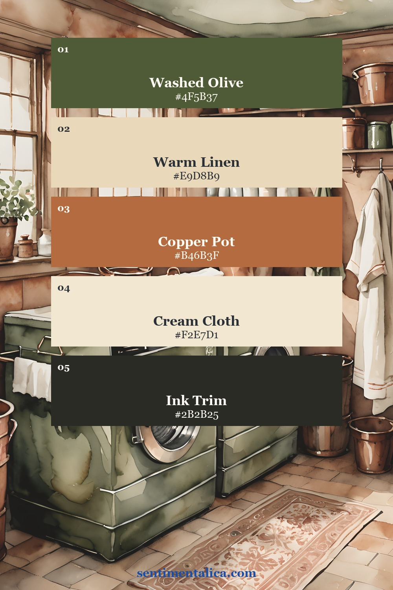
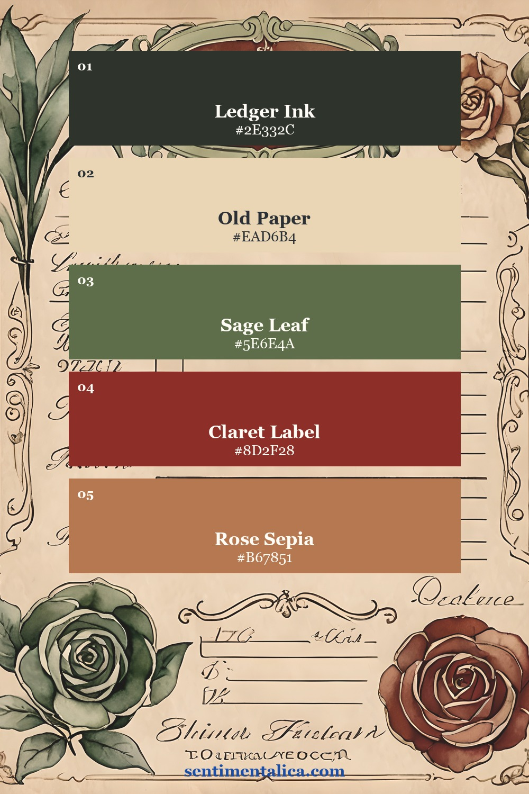
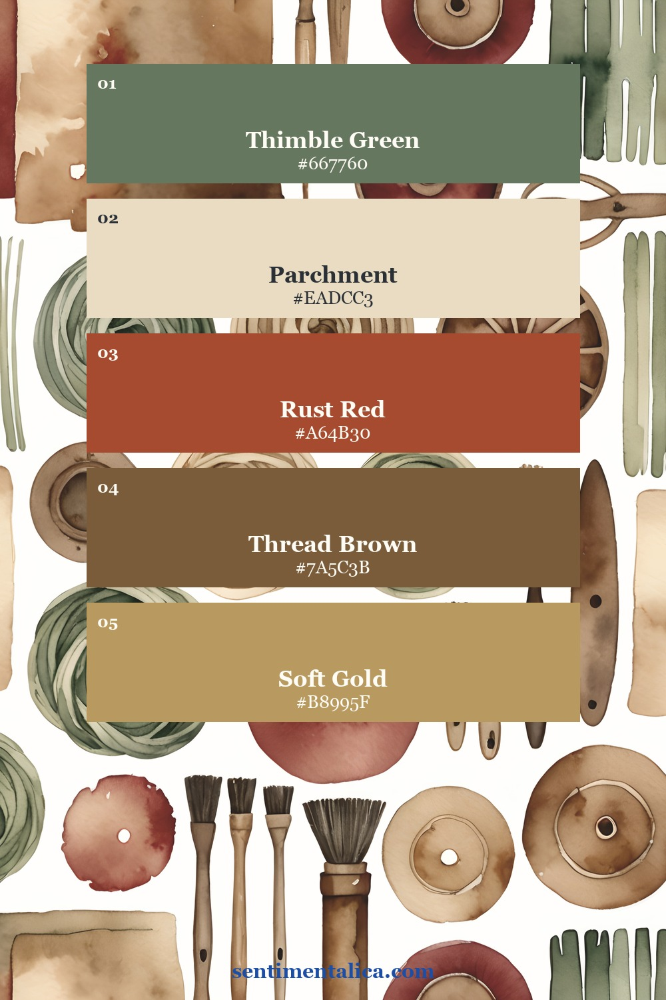
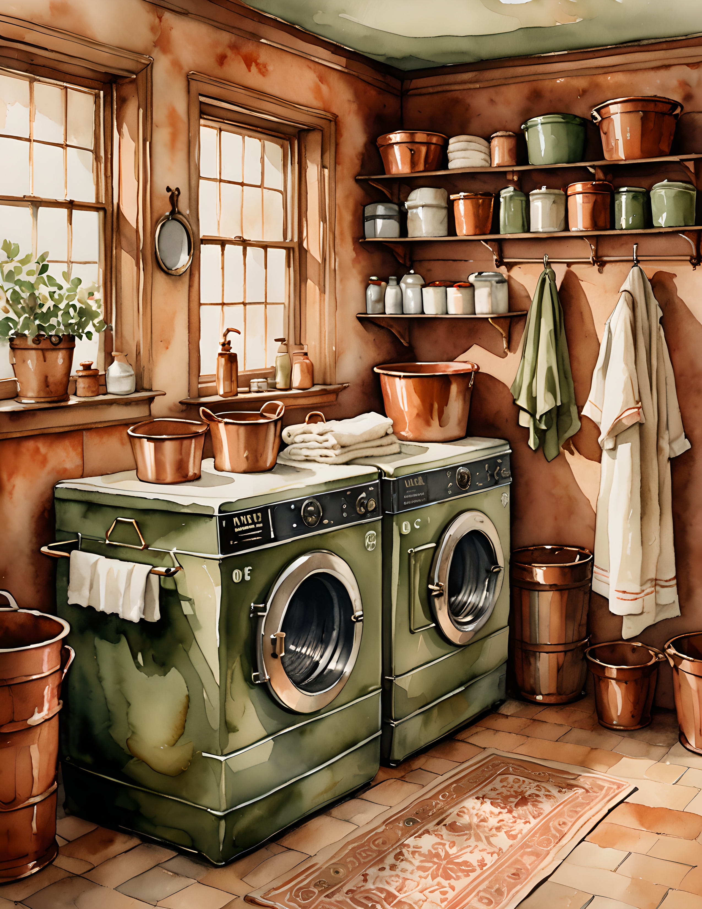
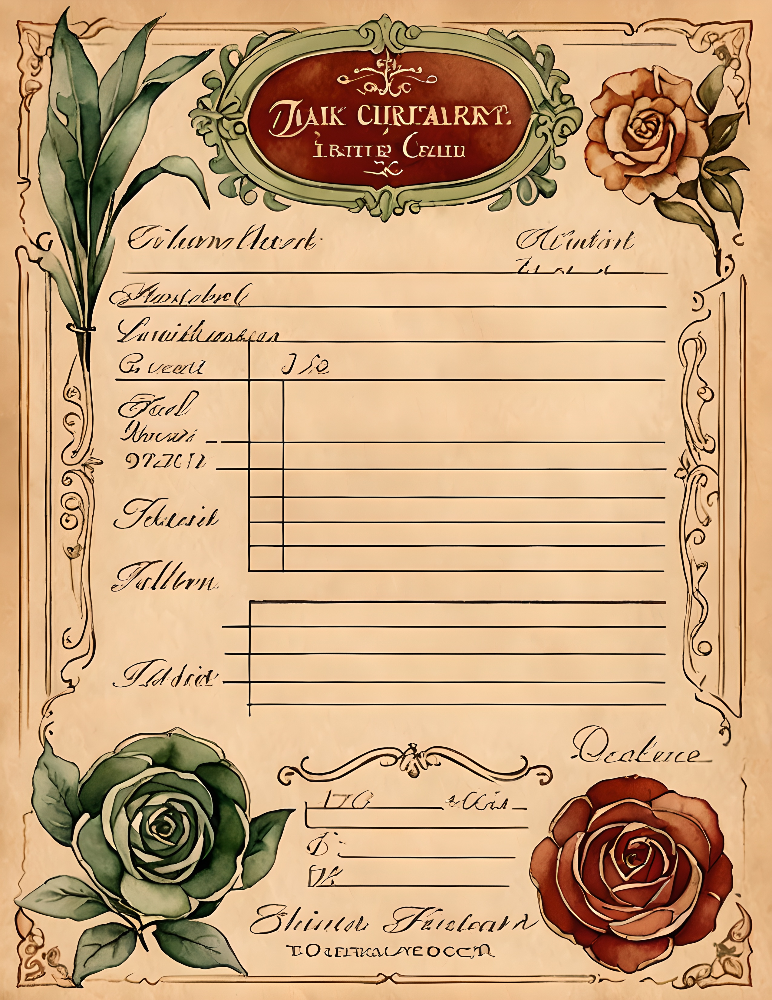
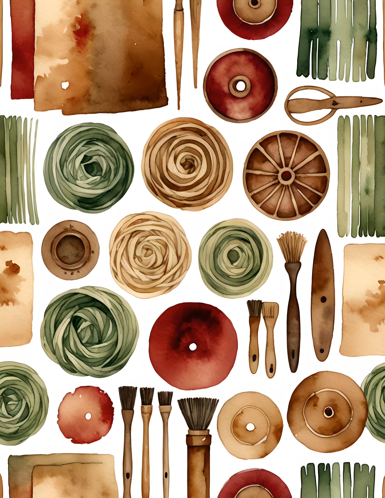

Ledger Textile is for pages that feel stitched together rather than decorated. The palette is not sugary or floral in the usual way. It has olive cloth, old paper, copper pots, claret red labels, brown thread, and the quiet rhythm of repeated lines.
That makes it a good kit when a journal spread needs structure. Use it for receipt pockets, sewing notes, fabric scraps, old-house lists, or pages that should feel collected slowly over time.

Start with olive and copper
Olive green is the anchor here. It keeps the warm copper tones from becoming too orange, and it makes the whole page feel more grounded. Use copper once as a strong accent: a tab, title strip, pocket edge, or small label. Let olive carry the larger pieces.

Add a claret note
Claret red is the color that makes this palette feel textile-based instead of simply neutral. It works best in tiny controlled places: a number label, stitched border, seal, or one torn paper strip. If you use too much, it becomes loud. If you use just enough, it feels intentional.

Keep the paper quiet
The cream and parchment colors are important because this listing has a lot of detail. Give the eye blank paper between patterned pieces. A quiet center, a clean journaling area, or a pale ledger card will make the darker greens and rust colors look more expensive.
See the printable pages up close



If you want a journal page that feels like old fabric, household ledgers, and little inherited paper pieces, Ledger Textile gives you a ready-made direction without needing a bright focal image.